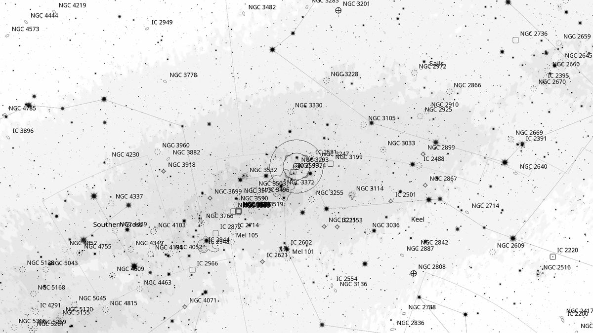
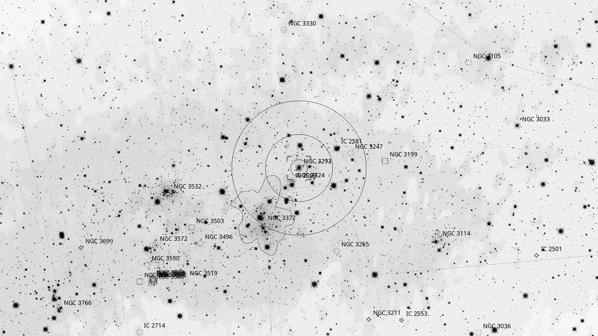
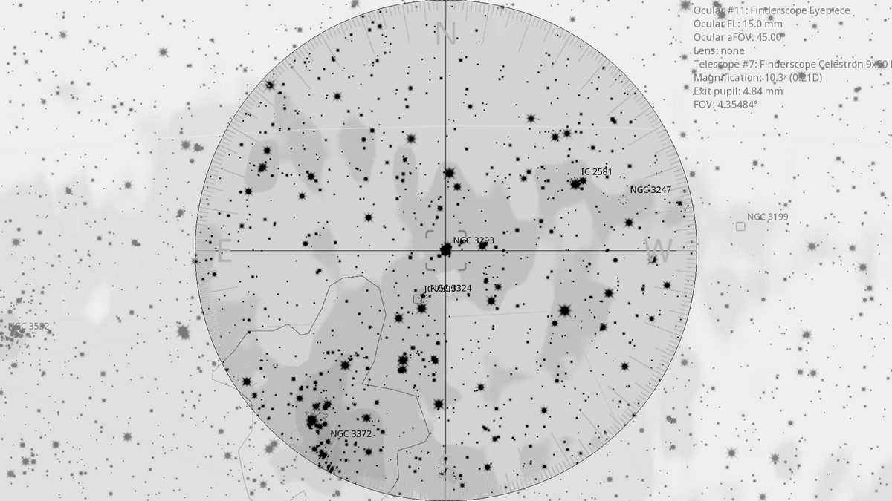
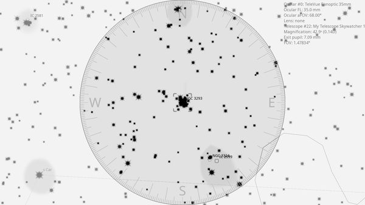

NGC 3293 (OC+N)
| R.A. | Dec. | Size | Mag | SB | Cnt.St | Type | Distance | Chart |
|---|---|---|---|---|---|---|---|---|
| 10h 35m 50.5s | -58° 14′ 05.4″ | 8.0′ | 4.7 | 9.0 | I3r | OC+N | -- | -- |

Background
NGC 3293 is a young ( 6 million years) and tightly-packed open cluster about 8,300 light-years away on the western edge of the Carina Nebula complex. Often called the “Gem Cluster”. Its bright orange-red member is V361 Carinae, a red supergiant that contrasts strikingly with the surrounding hot, blue main-sequence stars — a textbook demonstration of how massive stars evolve at very different rates within a coeval cluster.
My Observing Notes
30-cm (SkyWatcher 12-inch f/5): A mere xx° NW of η Carinae, easy to pick up in the finderscope. Compact, 5′ across, with a dense collection of stars tightly packed in. An orange-red star (V361 Car) jumps out immediately in the core, with hints of yellow members around it — reminiscent of the nearby Jewel Box. At 94× (16 mm Nagler) a band of nebulosity is visible to the right, making for a beautiful rich field. (A passenger plane flew directly through the FOV mid-observation — a first.)(10 April 2026)
25-cm (Meade 10-inch LX200, The Coffee Grinder): With η Carinae as the jumping-off point, easy to spot in the finderscope as a bright cluster of stars 2° NW. A beautiful cluster: bright compact core of blue-white supergiants with a single orange-red giant amongst the sea of stars — H. C. Russell's nickname “The Gem” fits perfectly. If you ever tire of the Jewel Box in Crux, this counterpart in Carina is just as easy to find.(Friday, May 2025)
References
Charts



